28
28.1
Use this submenu to determine the type of the active image or to convert it to another type. An attempt to perform an unsupported conversion causes a dialog box to be displayed that lists the possible conversions.
Table 4 Supported conversions in ImageJ (ImageType↑ submenu). Note that ImageJ2 supports many more types of image data.
| 8-bit | 16-bit | 32-bit | 8-bit color | RGB color | RGB stack | HSB stack | |
| 8-bit | … | I, S | I, S | I, S | |||
| 16-bit | I, S | … | I, S | I, S | |||
| 32-bit | I, S | I, S | … | I, S | |||
| 8-bit color | I, S | … | I | ||||
| RGB color | I, S | I, S | … | I, S | I, S | ||
| RGB stack | I | … | |||||
| HSB stack | I | … |
I: Single images only; S: Stacks
8-bit Converts to 8-bit grayscale. ImageJ converts 16-bit and 32-bit images to 8-bit by linearly scaling from min--max to 0--255, where min and max are the two values displayed in the . displays these two values as Display range. Note that this scaling is not done if Scale When Converting is not checked in RGB images are converted to grayscale using the formula gray = (red + green + blue) ⁄ 3 or gray = 0.299 × red + 0.587 × green + 0.114 × blue if Weighted RGB Conversions is checked in
16-bit Converts to unsigned 16-bit grayscale.
32-bit Converts to signed 32-bit floating-point grayscale.
8-bit Color Converts to 8-bit indexed color using Heckbert’s median-cut color quantization algorithm. A dialog box allows the number of colors (2--256) to be specified. The active image must be RGB color.
RGB Color Converts to 32-bit RGB color.
RGB Stack Converts to a 3--slice (red, green, blue) stack. The active image must be RGB color.
HSB Stack Converts to a 3--slice (hue, saturation and brightness) stack. The active image must be RGB color.
28.2
This submenu contains commands that adjust brightness/contrast, threshold levels and image size.
15 Applying Auto Brightness/Contrast to Entire Stacks
The command can be used to adjust the brightness and contrast of each slice in a stack, according to either the optimal for each individual slice (if Use Stack Histogram is unchecked) or the overall stack (by ticking Use Stack Histogram). The default behavior of the B&C tool () is to use the overall stack histogram.
28.2.1
Use this tool to interactively alter the brightness and contrast of the active image. With 8-bit images, brightness and contrast are changed by updating the image’s lookup table (LUT), so pixel values are unchanged. With 16-bit and 32-bit images, the display is updated by changing the mapping from pixel values to 8-bit display values, so pixel pixel values are also unchanged. Brightness and contrast of RGB images are changed by modifying the pixel values.
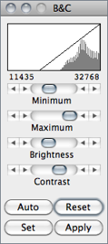
Histogram The line graph at the top of the window, which is superimposed on the image’s histogram, shows how pixel values are mapped to 8-bit (0--255) display values. The two numbers under the plot are the minimum and maximum displayed pixel values. These two values define the display range, or ‘window’. ImageJ displays images by linearly mapping pixel values in the display range to display values in the range 0--255. Pixels with a value less than the minimum are displayed as black and those with a value greater than the maximum are displayed as white.
Minimum and Maximum sliders Control the lower and upper limits of the display range. Holding down Shift will simultaneously adjust all channels of a composite image (e.g., ).
Brightness slider Increases or decreases image brightness by moving the display range. Holding down Shift will simultaneously adjust all channels of a composite image.
Contrast slider Increases or decreases contrast by varying the width of the display range. The narrower the display range, the higher the contrast. Holding down Shift will simultaneously adjust all channels of a composite image.
Auto ImageJ will automatically optimize brightness and contrast based on an analysis of the image’s histogram. Create a selection, and the entire image will be optimized based on an analysis of the selection. The optimization is done by allowing a small percentage of pixels in the image to become saturated (displayed as black or white). Each additional click on Auto increases the number of saturated pixels and thus the amount of optimization.
A run("Enhance Contrast", "saturated=0.35") macro call is generated if the command recorder () is running.
A run("Enhance Contrast", "saturated=0.35") macro call is generated if the command recorder () is running.
Reset Restores the original brightness and contrast settings. The display range is set to the full pixel value range of the image. A resetMinAndMax() macro call is generated if the command recorder is running. Holding down Shift restores original settings in all channels of a composite image.
Set Allows to enter the minimum and maximum display range values in a dialog box. A setMinAndMax() macro call is generated if the command recorder is running.
-
A 16-bit image consists of 65536 possible gray levels. Most of times, however, the relevant image information is contained only within a narrow range of the grayscale. This is the case, e.g., in low light microscopy, in which signal is restricted to the lower end of the grayscale. The Set Display Range dialog allows you to choose how to scale the range of gray levels of 16-bit images.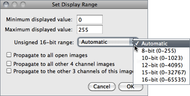Automatic Automatically selects the best range given the intensity values of the image based on the percentage of the total number of pixel values from the lowest to highest pixel value.8-bit (0-255) Gray level range of 0-255.10-bit (0-1023) Gray level range of 0-1023.12-bit (0-4095) Gray level range of 0-4095.15-bit (0-32767) Gray level range of 0-32767.16-bit (0-65535) Gray level range of 0-65535.Check Propagate to all open images to apply these values to the rest of the images currently open. With multi-channel images, the option to propagate the specified range to the remaining channels is also available.
Apply Applies the current display range mapping function to the pixel data. If there is a selection, only pixels within the selection are modified. This option currently only works with 8-bit images and stacks and with RGB stacks. This is the only B&C option that alters the pixel data of non-RGB images.
, , Color Balance…↓, 15: Applying Auto Brightness/Contrast to Entire Stacks↑, 17: Brightness/Contrast of High Bit--Depth Images↓, 16: Display Range of DICOM Images↓
16 Display Range of DICOM Images
With DICOM images, ImageJ sets the initial display range based on the Window Center (0028, 1050) and Window Width (0028, 1051) tags. Click Reset on the W&L () or B&C () window and the display range will be set to the minimum and maximum pixel values.
28.2.2
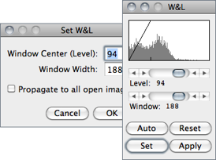
This command and (B&C) are redundant, but (W&L) behaves in a manner closer to that implemented on medical image terminals by interactively adjusting the Window — range of minimum and maximum (Contrast) — and Level — position of that range in the grayscale intensity space (Brightness).
If the B&C window is opened, it will be closed and the W&L window will be opened at the same location.
, Color Balance…↓, 15: Applying Auto Brightness/Contrast to Entire Stacks↑, 17: Brightness/Contrast of High Bit--Depth Images↓,16: Display Range of DICOM Images↑
28.2.3
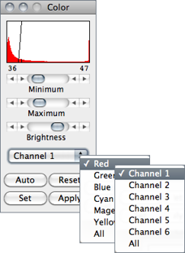
This panel makes adjustments to the brightness and contrast of a single color of a standard RGB image (8-bit per color channel). For multi-channels Stacks↑ and Hyperstacks↑ (Color Composite Images↑) it adjusts each of the color channels independently. Use the drop-down menu to specify which color / channel will be adjusted (the histogram is drawn for the selected channel).
Maximum and Minimum sliders, Auto, Set and Apply work as described for . Similarly to the tool, if the B&C window is opened, it will be closed and the Color window will be opened at the same location.
NB: When switching from one color to another, the changes made to one color will be lost unless Apply is clicked before. Also, note that for 48-bit color images that load as a stack, works on single stack slices, i.e., colors, and the color settings of the Color panel are ignored.
, Color↓ submenu
17 Brightness/Contrast of High Bit--Depth Images
When displayed, the intensity of each pixel that is written in the image file is converted into the grayness of that pixel on the screen. How these intensities are interpreted is specified by the image type. From the ImageJ website:
16-bit and 32-bit grayscale images are not directly displayable on computer monitors, which typically can show only display 256 shades of gray. Therefore, the data are mapped to 8-bit by windowing. The window defines the range of gray values that are displayed: values below the window are made black, while values above the window are white. The window is defined by minimum and maximum values that can be modified using .It may happen that the initial windowing performed by ImageJ on these high bit--depth (or HDR[?]) images is suboptimal. Please note that windowing does not affect image data (cf. the HDRexplorerTool).
28.2.4
Use this tool to automatically or interactively set lower and upper threshold values, segmenting grayscale images into features of interest and background. Use ) (with LimittoThreshold in checked) to measure the aggregate of the selected features. Use to measure features individually. Use the Wand Tool↑ to outline a single feature.

Upper slider Adjusts the minimum threshold value. Hold Shift while adjusting the minimum to move a fixed-width thresholding window across the range of gray values.
Lower slider Adjusts the maximum threshold value.
Method Allows any of the 16 different automatic thresholding methods to be selected [18]. These methods are described on Fiji↑’s Auto Threshold website. The Default method is the modified IsoData algorithm used by ImageJ 1.41 and earlier. Note that these are global thresholding methods that typically cannot deal with unevenly illuminated images (such as in brightfield microscopy). In these cases, local algorithms are more appropriated, by allowing the threshold to smoothly vary across the image.. These are implemented by the Auto Local Threshold plugin, pre-installed in Fiji↑.
Display Selects one of three display modes:
-
Red Displays the thresholded values in red.B&W Features are displayed in black and background in white. This mode respects the Black background flag set inOver/Under Displays pixels below the lower threshold value in blue, thresholded pixels in grayscale, and pixels above the upper threshold value in green. These colors can be changed from a macro by calling the ImageProcessor.setOverColor() and setUnderColor() methods (example).
Dark background To be checked when features are lighter than the background. The state of the checkbox is remembered across restarts.
Stack histogram If checked, ImageJ will first compute the histogram of the whole stack (or hyperstack) and then compute the threshold based on that histogram. As such, all slices are binarized using the single computed value. If unchecked, the threshold of each slice is computed separately.
Auto Uses the currently selected thresholding method to automatically set the threshold levels based on an analysis of the histogram of the current image or selection.
Apply Sets thresholded pixels to black and all other pixels to white. For 32-bit float images Apply will also run .
Reset Disables thresholding and updates the histogram.
Set New threshold levels can be entered into this dialog box.
28.2.5
Thresholds 24-bit RGB images based on Hue Saturation and Brightness (HSB), Red Green and Blue (RGB), CIE Lab or YUV components. Ranges of the filters can be set manually or based on the pixel value components of a user-defined ROI. This command, implemented in version 1.43l, is an experimental built-in version of the Threshold Colour plugin [20] and is not yet fully integrated into ImageJ.
Pass If checked, values within range are thresholded and displayed (band-pass filter), otherwise, values outside the selected range are thresholded (band-reject filter).
Thresholding Method Allows any of the 16 different automatic thresholding methods to be selected (see ).
Threshold Color Selects the threshold color: either Red, Black, White or Black & White (see ).
Color space Selects the color space: HSB, RGB, CIE Lab or YUV (see Color Spaces and Color Separation↑).
Dark background To be checked when features are lighter than the background (see 23: Interpreting Binary Images↓). The state of the checkbox is remembered across restarts.
Original Restores the original image and updates the buffer when switching to another image.
Filtered Shows the filtered image. Note that the final thresholded image type is RGB, not 8-bit gray (see ).
Select Creates a ROI selection based on the current settings. The selection is made according to the settings defined in the dialog.
Sample (Experimental) Sets the ranges of the filters based on the pixel value components in a user-defined ROI.
Stack Processes the remaining slices of the stack (if any) using the current settings.
Macro Creates a macro based on the current settings which is sent to the Macro Recorder window (), if open.
Help Opens the built-in help dialog.
28.2.6
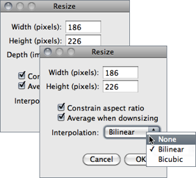
Scales the active image or selection to a specified Width and Height in pixels.
Check Constrain aspect ratio and ImageJ will adjust either the Height or the Width to maintain the original aspect ratio. When applicable, other dimensions can also be resized: Depth (images) in stacks, Depth (slices) and Time (frames) in hyperstacks.
Check the Average when downsizing checkbox for better results when scaling down images [19]. Two resampling methods are possible: Bilinear and Bicubic interpolation. The implementation of the bicubic method (Catmull-Rom interpolation) is derived from Burger and Burge, 2008 [104].
, ,
28.2.7
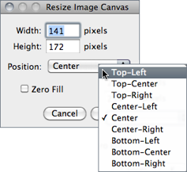
Changes the canvas size without scaling the actual image. Width and Height may be either expanded or contracted. If the canvas size is increased, the border is filled with the current background color (see ), or, if Zero Fill is checked, the border is filled with pixels that have a value of zero. The position of the old image within the new canvas may also be specified.
28.2.8
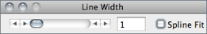
This widget is used to adjust the width of line selections (in pixels). It is opened more easily by double clicking on the Line Selection Tools↑ icon. Checking Spline Fit fits a cubic spline curve to the points that define the line.
,
28.3
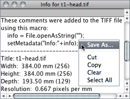
Opens a text window containing information about the active image (including the pixel or voxel size, since IJ 1.44k). For DICOM and FITS images, also displays file header information. Use the popup menu (right-click in the Info window) to save the information to a text file or copy it to the system clipboard.
28.4
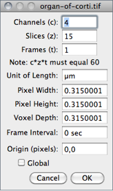
Use this command to display and set various properties of the current image or stack.
The number of Channels (c), Slices (z) and Frames (t) in the image can be changed as long as the product of c, z, and t is equal to the number of images in the stack.
Unit of Length is a string describing the measuring unit of Pixel Width, Pixel Height and Voxel Depth. These three dimensions are automatically converted if Unit of Length is changed from one of ImageJ’s known unit (‘nm’, ‘μm’ [or ‘um’ or ‘micron’], ‘mm’, ‘cm’, ‘meter’, ‘km’ or ‘inch’) to another. μ and Å symbols can be typed using AltM and AltShiftA, respectively.
With t-series stacks, the Frame Interval in seconds (reciprocal of the frame rate) can be viewed and set. If the unit is ‘sec’, setting the Frame Interval will also set the frame rate used by .
Origin is the reference point 0, 0 (always in pixels) of the image coordinate system (see also Invert Y coordinates↓ in ).
As explained in 24: Global Calibrations↓, check Global to make the current settings global, i.e., applied to all images opened during the current session.
,
28.5
This submenu contains commands that deal with color images.
28.5.1
Splits an RGB image (or stack) into three 8-bit grayscale images containing the red, green and blue components of the original. The window names have an appended (red), (green) and (blue). With composite images and / or hyperstacks (e.g., ) this command splits the stack into separate channels.
28.5.2
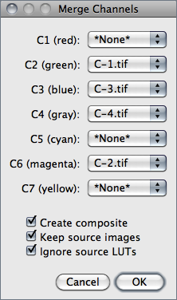
Merges 2--7 images into an RGB image or multi-channel composite image. Select the channel order/color using the C1--C7 dropdown menus. Select *None* to skip a channel.
Create composite If checked, a multi-channel composite image (see Color Composite Images↑) will be created. If unchecked, an RGB image is created instead. When creating composite images, original LUTs and display ranges are preserved unless Ignore source LUTs is checked. Source LUTs are always ignored when creating RGB images.
Keep source Images If checked, source images will not be disposed.
Ignore source LUTs If checked, LUTs of source images are ignored. In this case, merged channels will adopt the lookup table mentioned besides the channel choice, i.e., red, gree, blue, gray, cyan, magenta, yellow. As mentioned, this option is assumed when merging into RGB.
28.5.3
Alias for .
28.5.4
Converts a two or three slice stack into an RGB image, assuming that the slices are in R, G, B order. The stack must be 8-bit or 16-bit grayscale. Also converts composite images (e.g., ) into RGB.
28.5.5
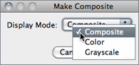
Converts in place an RGB image, a 2--7 image stack or a 2--7 channel hyperstack into a composite color image. Use the tool ( Shift Z ) to enable and disable the channels of a composite image. Use ( Shift C ) to adjust the brightness and contrast of the current channel.
28.5.6
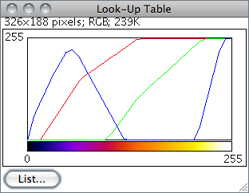
Displays a plot of the active image’s lookup table (LUT) . The lookup table, or color table, describes the color that is displayed for each of the 256 possible pixel values. For 16 and 32-bit images, the range of displayed pixel values is mapped to 0--255. A bar under the plot displays the color representation of the pixel values. Note that RGB color images do not use a lookup table. Use the List…radio button to export the LUT as a CSV[?] file.
28.5.7
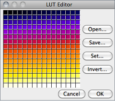
Opens the ImageJ LUT (Lookup Table) Editor. A lookup table in ImageJ has up to 256 entries. The entry index, and the three values (red, green and blue) associated with it, are displayed in the ImageJ status bar as you move the cursor over the LUT Editor window. Click on an entry to edit the red, green and blue values for that entry using a Color Selector window (cf. Color Picker… [K]↓).
28.5.8
The Color Picker [17] enables the user to select foreground and background colors, which affects , , and other drawing commands. It displays current foreground and background colors in the selection boxes at the bottom of the window. It has two modes: Foreground and Background. To change modes, click on the desired selection box. Clicking on the Foreground/Background Switcher button sets the current foreground to the background and vice versa. The Black/White Reset button sets the foreground to black and the background to white.
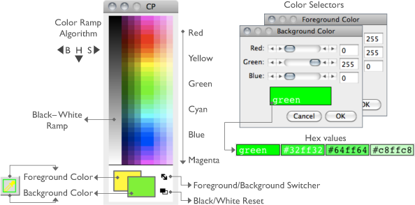
Figure 22 Color Picker and Color Choosers (IJ 1.46c). The CP window can be activated using Shift K (the keyboard shortcut for ImageColor Color Picker… [K]↑) or by double clicking on the Color Picker Tool↑ on the ImageJ Toolbar↑. Color Choosers are evoked by double clicking on a color of the CP window and can be used to retrieve Hexadecimal Color Values↓. The ‘eye dropper’ is drawn in the current foreground color while the frame around it is drawn in background color. Foreground color is also reflected in drawing tools such as the Arrow↑, Brush↑, Flood Filler↑ and Pencil↑ tools.
The color palette is based on HSB (Hue, Saturation and Brightness) color model (see Color Spaces and Color Separation↑). Hue increases as you go down the palette while saturation and brightness values are split horizontally. The left half of the palette varies only in brightness while the right half varies only in saturation. At the center of the color ramp are enlarged red, green, blue, cyan, magenta, and yellow colors for quick selection. To the left of the color palette is a grayscale ramp that goes from pure black to pure white.
ColorChoosers display hex color valuesDouble clicking on a color brings up the ColorChooser, a widget with three sliders used to specify the RGB values of the foreground or background color. The title of the ColorChooser widget (Foreground Color or Background Color) indicates the current selection mode. To get precise colors, manually change the values in the text boxes. The hex value of the final color is also displayed, offering a convenient way to retrieve custom colors to, e,g, personalize Overlays↑ (see 20: Hexadecimal Color Values↓).
As mentioned earlier, the Color Picker Tool↑ tool can be used to ‘pick-up’ foreground/background colors from an image canvas. Foreground color can also be changed using the Color dropdown menu in the Options dialog of drawing tools such as Arrow↑, Brush↑, Overlay Brush↑ and Pencil↑ tools.
18: Embedding Color Annotations in Grayscale Images↓, , , , , Image Types and Formats↑, Toolbar Shortcuts↓
18 Embedding Color Annotations in Grayscale Images
Color marks are only available with color images or grayscale images that have been converted to RGB ( submenu). For non-RGB images, background / foreground color will be drawn in equivalent gray levels, e.g.: For a 8-bit image, if the foreground color is red (RGB: 255, 0, 0) intensity of drawn selections will be (255 + 0 + 0) ⁄ 3 = 85.
28.6
This submenu contains commands related to Stacks↑. Operations specifically related to Hyperstacks↑ are listed in the submenu.
28.6.1
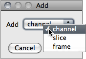
Inserts a blank slice after the currently displayed slice. Holding Alt inserts a blank slice before the current slice. With Hyperstacks↑, a dialog prompt allows to insert either a channel, z-slice or t-frame.
28.6.2
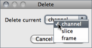
Deletes the currently displayed slice. With Hyperstacks↑, it can delete the current channel, z-slice or t-frame.
28.6.3
Displays the slice that follows the currently displayed slice. Holding Alt > will skip nine slices forward.
28.6.4
Displays the slice that precedes the currently displayed slice. Holding Alt < will skip nine slices backward.
28.6.5
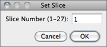
Displays a specified slice. The user must enter a slice number greater than or equal to one and less than or equal to the number of slices in the stack.
28.6.6
Creates a new stack from images currently displayed in separate windows.
Method If images differ in size, a drop-down menu allows to choose a conversion method:
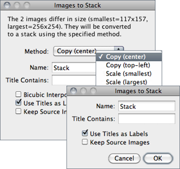
Copy (center) and Copy (top-left) Stack will have the width of the widest open image and the height of the highest open image. Smaller images will then be copied (either to the center or to the upper left corner) of the slice. Borders are filled with pixels that have a value of zero.
Scale (smallest) and Scale (largest) Stack will have the dimensions of the smallest / largest open image. Other images are scaled to the new slice dimensions. Bicubic interpolation is used if Bicubic interpolation is checked (cf. and ).
Name Specifies the title of the stack to be created.
Title Contains Enter a string into this field and ImageJ will only convert to stack images whose name contains that string.
Bicubic Interpolation If checked, bicubic interpolation (cf. ) will be used if any of the Scale methods was previously chosen.
Use Title as Labels If checked, image titles (without extension) will be used as stack labels. As described in , these labels (up to 60 characters) correspond to the image subtitle, the line of information above the image.
Keep Source Images If checked, original images are kept.
28.6.7
Converts the slices in the current stack to separate image windows.
28.6.8
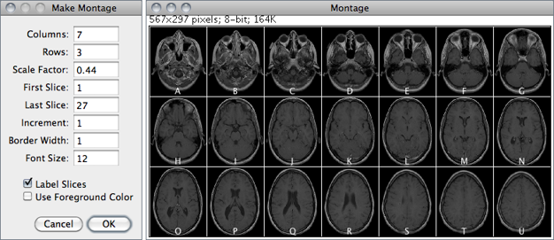
Label Slices If checked, montage panels are labelled with slice labels. Slice labels (up to 60 characters) correspond to the image subtitle, the line of information above the image. These labels are part of the stack metadata, typically created by or . If no slice metadata exists (the setMetadata() macro function can be used to customize slice labels) images are labelled with slice numbers. Note that the command can be used to draw labels in stack slices. Labels are typeset in sans-serif typeface.
Use Foreground Color If checked, borders and labels are drawn in the foreground color and blank areas of the panel are filled with the background color.
, , RC Montage plugin, Magic Montage — a macro toolset to reorder and manipulate images in the montage (a video tutorial can be found here)
28.6.9
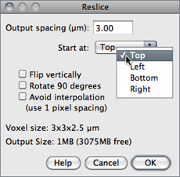
Reconstructs one or more orthogonal slices through the image volume represented by the current stack or hyperstack [21].
The estimated size of the output stack and the amount of available memory are displayed at the bottom of the dialog. Increase Output spacing to reduce the size of the output stack.
A dialog allows you to specify the spacing of the reconstructed slices.
Output spacing Determines the number of orthogonal slices that will be reconstructed. Increasing Outputspacing reduces the size of the output stack.
Start at Determines the image edge (top, left, bottom or right) from which reconstruction starts. Start at is replaced by Slice count if there is a line selection. With lines selections, a stack is created by shifting (by Output spacing) the line down and to the left to generate additional slices for the output stack. In this case, the size of the output stack in determined by Slice count.
Flip vertically If checked, each slice in the output stack will be flipped vertically.
Rotate 90 degrees If checked, each slice in the output stack will be rotated 90○.
Avoid interpolation If checked, no interpolation will be done.
Dynamic Reslice and Radial Reslice plugins
28.6.10
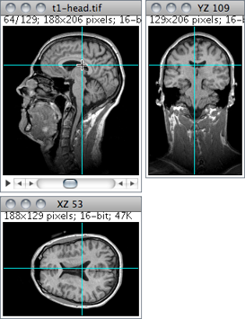
Provides an orthogonal view display of the current stack or hyperstack [22]. E.g., if a stack displays sagittal sections, coronal (YZ projection image) and transverse (XZ projection image) will be displayed through the data-set.
The two extra planar views are displayed in ‘sticky’ panels next to original image and can be toggled using Shift H , the command shortcut.
The intersection point of the three views follows the location of the mouse click and can be controlled by clicking and dragging in either the XY, XZ or YZ view. XY and XZ coordinates are displayed in the title of the projection panels. The mouse wheel changes the screen plane in all three views.
Voxel dimensions can be adjusted in .
28.6.11
Projects an image stack along the axis perpendicular to image plane (the so-called z axis) [21]. With hyperstacks, the projection s performed on the active time frame, or for all time points if All Time Frames is checked. Five different projection types are supported. The preferred projection method is stored in the preferences file.
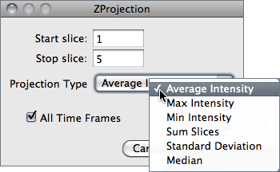
Average Intensity projection outputs an image wherein each pixel stores average intensity over all images in stack at corresponding pixel location.
Maximum Intensity projection (MIP[?]) creates an output image each of whose pixels contains the maximum value over all images in the stack at the particular pixel location.
Sum Slices projection creates a real image that is the sum of the slices in the stack.
Standard Deviation projection creates a real image containing the standard deviation of the slices.
Median projection outputs an image wherein each pixel stores median intensity over all images in stack at corresponding pixel location.
, ,
28.6.12
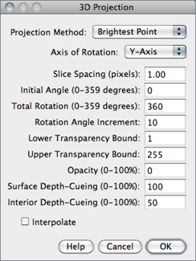
This command creates a sequence of projections of a rotating volume (stack or hyperstack) onto a plane using nearest-point (surface), brightest-point, or mean-value projection or a weighted combination of nearest point projection with either of the other two methods (partial opacity) [40]. The user may choose to rotate the volume about any of the three orthogonal axes (x, y, or z), make portions of the volume transparent (using thresholding), or add a greater degree of visual realism by employing depth cues.
Each frame in the animation sequence is the result of projecting from a different viewing angle. To visualize this, imagine a field of parallel rays passing through a volume containing one or more solid objects and striking a screen oriented normal to the directions of the rays.
Each ray projects a value onto the screen, or projection plane, based on the values of points along its path. Three methods are available for calculating the projections onto this plane: nearest-point, brightest-point, and mean-value. The choice of projection method and the settings of various visualization parameters determine how both surface and interior structures will appear.
Projection Method Select Nearest Point projection to produce an image of the surfaces visible from the current viewing angle. At each point in the projection plane, a ray passes normal to the plane through the volume. The value of the nearest non transparent point which the ray encounters is stored in the projection image. Brightest Point projection examines points along the rays, projecting the brightest point encountered along each ray. This will display the brightest objects, such as bone in a CT[?] (computed tomographic) study. Mean Value projection, a modification of brightest--point projection, sums the values of all transparent points along each ray and projects their mean value. It produces images with softer edges and lower contrast, but can be useful when attempting to visualize objects contained within a structure of greater brightness (e.g.a skull).
Slice Spacing The interval, in pixels, between the slices that make up the volume. ImageJ projects the volume onto the viewing plane at each Rotation Angle Increment, beginning with the volume rotated by Initial Angle and ending once the volume has been rotated by Total Rotation.
Lower/Upper Transparency Bound Determine the transparency of structures in the volume. Projection calculations disregard points having values less than the lower threshold or greater than the upper threshold. Setting these thresholds permits making background points (those not belonging to any structure) invisible. By setting appropriate thresholds, you can strip away layers having reasonably uniform and unique intensity values and highlight (or make invisible) inner structures. Note that you can also use to set the transparency bounds.
Opacity Can be used to reveal hidden spatial relationships, specially on overlapping objects of different colors and dimensions. The (surface) Opacity parameter permits the display of weighted combinations of nearest-point projection with either of the other two methods, often giving the observer the ability to view inner structures through translucent outer surfaces. To enable this feature, set Opacity to a value greater than zero and select either Mean Value or Brightest Point projection.
Surface/Interior Depth-Cueing Depth cues can contribute to the three-dimensional quality of projection images by giving perspective to projected structures. The depth-cueing parameters determine whether projected points originating near the viewer appear brighter, while points further away are dimmed linearly with distance. The trade-off for this increased realism is that data points shown in a depth-cued image no longer possess accurate densitometric values. Two kinds of depth-cueing are available: Surface Depth-Cueing and Interior Depth-Cueing. Surface Depth-Cueing works only on nearest-point projections and the nearest-point component of other projections with opacity turned on. Interior Depth-Cueing works only on brightest-point projections. For both kinds, depth-cueing is turned off when set to zero (i.e.100% of intensity in back to 100% of intensity in front) and is on when set at 0 < n 100 (i.e.(100 − n)% of intensity in back to 100% intensity in front). Having independent depth-cueing for surface (nearest-point) and interior (brightest-point) allows for more visualization possibilities.
Interpolate Check Interpolate to generate a temporary z-scaled stack that is used to generate the projections. Z-scaling eliminates the gaps seen in projections of volumes with slice spacing greater than 1.0 pixels. This option is equivalent to using the Scale plugin from the TransformJ package to scale the stack in the z-dimension by the slice spacing (in pixels). This checkbox is ignored if the slice spacing is less than or equal to 1.0 pixels.
28.6.13
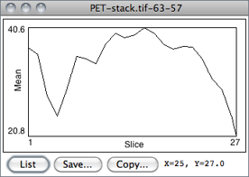
Plots the ROI selection mean gray value versus slice number. Requires a point or area selection.
Coordinates of the upper left corner of the selection (or the bounding rectangle for non-rectangular selections) are displayed in the graph title.
,
28.6.14
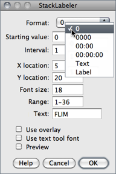
Adds a sequence of numbers (e.g., timestamps) and/or a label to a stack or hyperstack. Numbers and label are drawn in the current foreground color (cf. ).
The initial X,Y location, and Font size of the label are based on the existing rectangular selection, if any. Slices outside the Range are not affected.
Format Specifies the structure of the label. 0: Unpadded sequence; 0000: Pads each number with leading zero(s); 00 : 00: Converts the label into a minutes : seconds timestamp; 00 : 00 : 00 Converts the label into a hours : minutes : seconds timestamp; Text: Stamps only the contents of the Text field. Label: Displays slice labels.
Starting value and Interval Specify the first value and the numeric steps to be applied. Note that with timestamps, metric time values must be used, e.g., an Interval of 3600 will create 1 hour increments.
Text The string to be drawn after each number when the Format chosen is either 0 or Text (label without numeric sequence).
Use overlay If checked, labels will be created as non-destructive image Overlays↑. Note that previously added overlays will be removed. Also, note that Virtual Stacks↑ and Hyperstacks↑ can only have overlay labels.
Use text tool font If checked, labels will be created using the typeface and style specified in the Fonts…↑ widget. If unchecked, labels are typeset using ImageJ's default font: sans-serif typeface.
,
28.6.15
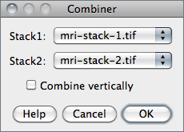
Combines two stacks [Width × Height × Depth] (W1 × H1 × D1 and W2 × H2 × D2) to create a new W1 + W2 × max(H1,H2) × max(D1,D2) stack. E.g., a 256 × 256 × 40 and a 256 × 256 × 30 stack would be combined to create one 512 × 256 × 40 stack.
If Combine vertically is enabled, creates a new max(W1 + W2) × (H1 + H2) × max(D1,D2) stack.
Unused areas in the combined stack are filled with background color (cf. ).
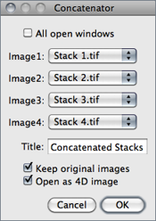
Concatenates multiple images or stacks. Images with mismatching type (see Image Types and Formats↑) and dimensions are omitted [24]. Stacks with the same number of slices can be concatenated as a 4D Hyperstacks↑, if Open as 4D image is checked. In this case, chosen stacks will be appended as time-points.
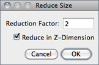
Reduces the size of stacks and hyperstacks by the specified Reduction Factor. E.g., For a 30 slices stack and a Reduction Factor of 2, the reduced stack will be be composed of 15 slices with every second slice being removed. Virtual stacks/hyperstacks are supported
With Hyperstacks, the default reduction is performed in the T-Dimension, but a choice is available to Reduce in Z-Dimension instead.
Alias for the command.
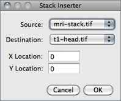
Inserts a Source image into a Destination image at the specified X and Y Location (pixel coordinates). Source and Destination can be single images or stacks but must be of the same type (see Image Types and Formats↑). The Destination image will be permanently modified once Source has been inserted. Note that when Source is a single image, can be used (together with ) to create image selections (ImageROIs), a more convenient way of blending two open images.
,
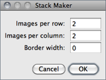
Converts a montage image to an image stack based on the specified number of rows and columns, taking into account a Border width. This is the opposite of what the command does.
Demontager plugin
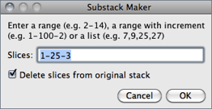
Extracts selected images from the active stack copying them to a new stack in the order of listing or ranging [25].
Extracted slices will be removed from the source stack if Deleted slices from original stack is checked. Currently, it does not work with hyperstacks and takes one of three types of input:
- A range of images. E.g.: 2-14 [extract slices 2 through 14]
- A range of images with increment, which can be used to de-interleave slices. E.g.: 2-14-2 [extract slices 2 and 14 and every second slice in between]
- A list of images. E.g.: 2, 4, 7 ,9, 14
Creates a substack of Stack size ⁄ Group size slices with each slice being the result of a Z Projection performed over the range of Group size.
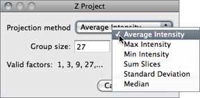
Group size must divide evenly into the stack size. This limitation can be overcome by the , that can also create grouped Z-projections.
The first ten divisors of Stack size are suggested at the bottom of the dialog.
, ,
Removes slice labels from stacks. The first line of a slice label (up to 60 characters) is displayed in parentheses in the image subtitle, the line of information above the image. The macro functions setMetadata() and getMetadata() can be use to set and retrieve the current slice label.
Animates the active stack by repeatedly displaying its slices (frames) in sequence. It is run more easily by clicking on the play icon preceding stack sliders (see Stacks↑). To stop the animation, click on the slider pause icon, click on the image or use , evoked by the same shortcut. As such, stacks animation can be toggled using \. The frame rate is displayed in the status bar. Open the dialog box to specify the animation speed (pressing Alt \ or right-clicking on the on the slider play/pause icon opens the dialog). Note that more than one stack can be animated at a time.
Terminates animation of the active stack (see ).
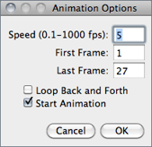
Use this dialog to set the animation speed in frames per second[?], the starting and ending frame, or to enable ‘oscillating’ animations. Selecting Start Animation animates the stack as soon as the dialog is dismissed.
Note that setting the Frame Interval in sets the animation speed as long as the unit used is ‘sec’.
This dialog can also be accessed by right-clicking on the play/pause icon that precedes the slice slider in Stacks↑ and frame slider in Hyperstacks↑ (see Stacks and Hyperstacks↑).
,
28.7
This submenu hosts commands specifically related Hyperstacks↑, images that have four (4D) or five (5D) dimensions. General operations related to Stacks↑ are listed in the submenu.
28.7.1
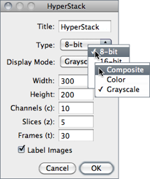
Creates a new hyperstack. Hyperstacks↑ have Width, Height, Channels (c dimension), Slices (z dimension) and time Frames (t dimension).
Image Type (see and Image Types and Formats↑) and Display Mode (see ) can be specified.
Checking Label Images will draw the channel number, slice number and frame number on each image in the hyperstack.
(an alias of this command) and
28.7.2
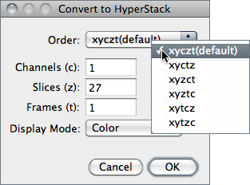
Converts a stack into a hyperstack. RGB stacks are converted into 3 channel hyperstacks. Order is the order of the channels (c), slices (z) and frames (t) within the stack. ImageJ hyperstacks are always in czt order. Stacks not in czt order will be shuffled to be in czt order. The channel Display Mode can be Composite, Color or Grayscale (cf. ).
28.7.3
Converts a hyperstack into a stack (in czt order).
28.7.4
This command [26] reduces the dimensionality of an hyperstack by creating a new hyperstack with, for example, all the channels and time points at a given z position or all the z slices for the current channel and time point.
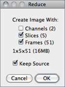
Uncheck Channels (n) to delete all but the current channel, Slices (n) to delete all but the current z slice and Frames (n) to delete all but the current time point. Check Keep Source and the original stack will not be deleted.
The expected dimensions and size of the reduced stack are displayed in the dialog.
28.7.5
Opens the widget↓, or brings it to the front if it is already open. Shift Z is the keyboard shortcut for this command. This tool allows to select the Display mode of composite images. In addition, several commands hosted in the submenu can easily be accessed through the More≫ drop-down menu. The same drop-down menu also provides a convenient list of primary colors (additive: red, green and blue, subtractive: cyan, magenta, yellow) that can be used to pseudocolor Color Composite Images↑.

Figure 24 Channel manipulations in Color Composite Images↑ using the tool.
28.8
Crops the image or stack based on the current rectangular selection.
28.9
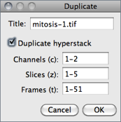
Creates a new window containing a copy of the active image or rectangular selection. For stacks and hyperstacks it is possible to specify the range of Channels (c), Slices (z) and Frames (t) to be duplicated.
With single images, hold Alt to skip the dialog box.
28.10
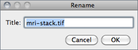
Renames the active image.
28.11
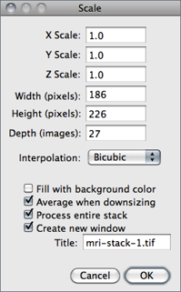
Resizes the image or current area selection by scale factors entered into a dialog box. As with , two resampling methods are possible: Bilinear and Bicubic interpolation.
For the best looking results, particularly with graphics and text, use integer scale factors (2, 3, 5, etc.) and check Average when downsizing with scale factors less than 1.0 [19]. Also, when downsizing, smoothing the source image prior to scaling may produce better looking results.
Scaled image/selection are copied to a new image named Title if Create new window is checked. If scaling a selection that will not be copied to a new image check Fill with Background Color to fill with the background color instead of zero.
Entire stacks (or hyperstacks in the Z Dimension) will be scaled if Process entire stack is checked.
, ,
28.12
This submenu contains commands that perform geometrical image transformation on the active image or stack.
28.12.1
Replaces the image or selection with a x-mirror image of the original.
28.12.2
Turns the image or selection upside down (y-mirror).
28.12.3
Reverses the order of the slices in a stack (z-mirror).
28.12.4
Rotates the entire image or stack clockwise 90○.
28.12.5
Rotates the entire image or stack counter-clockwise 90○.
28.12.6
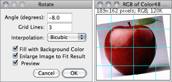
Use this dialog to rotate the active image or selection clockwise the specified number of degrees.
Set Grid Lines to a value greater than zero to superimpose a grid on the image in Preview mode. Two resampling methods are possible: Bilinear and Bicubic interpolation (cf. ).
With 8-bit and RGB images, check Fill with Background Color to fill with the background color instead of zero (cf. ). Check Enlarge to Fit Result and the image will be enlarged as needed to avoid clipping.
28.12.7
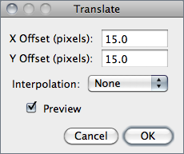
Translates (moves) the image in the x and y directions by a specified number of pixels. With stacks, you can translate either the current image or all the images in the stack. Two resampling methods are possible: Bilinear and Bicubic interpolation (cf. ).
Check Preview to see how the translation will affect the image. The background at the edges of the image will be set to 0.
Align_Slice and Align_RGB_planes plugins
28.12.8
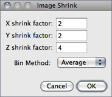
Reduces the size of an image by binning groups of pixels of user-specified size (X,Y,Z shrink factor) [27]. The resulting pixel can be calculated as Average, Median, Maximum, or Minimum. Undo support is restricted to 2D images (non stacks).
Z binning produces equivalent results to However, there are two main differences between the two commands: While replaces the original image, creates a new substack; and while Z shrink factor takes any value, Group size must divide evenly into the stack size.
, ,
28.12.9
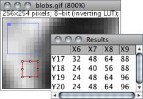
Prints the active area selection to the Results Table↑, clearing previous results. The entire image is processed when no area ROI exists. XY coordinates are detailed in column and row headers. Calibrated and floating-point images are listed with the precision specified by Decimal places in
For RGB images, each pixel is converted to grayscale using the formula gray = (red + green + blue) ⁄ 3 or the formula gray = 0.299 × red + 0.587 × green + 0.114 × blue if Weighted RGB to Grayscale Conversion is checked in
Text Images↑, Pixel Inspector↑, ↓, , , Stack_to_Results.js, a script that displays the contents of a stack using one image per column
28.12.10
The reverse of ↑, converting the tabular data in the Results Table↑ into a 32-bit image named Results Table. Column and row headers are ignored.
28.13
This submenu contains commands that control how the current image is displayed. The + and − or ↑ and ↓ keys are the preferred way to use the ↓ and ↓ commands. When a selection exists, zooming with the Arrow Keys↓ requires holding down either Shift or Ctrl.
28.13.1
Zooms in to next higher magnification level and, if possible, enlarges the window. As explained in Magnifying Glass↑, there are 21 possible levels (shown in the title bar): 3.1, 4.2, 6.3, 8.3, 12.5, 16.7, 25, 33.3, 50, 75, 100, 150, 200, 300, 400, 600, 800, 1200, 1600, 2400 and 3200%.
19 Working with Zoomed Canvases
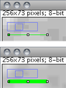
Images are magnified using + and − , or ↑ and ↓ if no selection exists. Magnification occurs around the cursor, or to the center of the image when the cursor lays outside the image canvas. The Zoom indicator in the upper left corner of magnified images shows what portion of the image is currently displayed. At high magnification levels the pixel grid becomes visible by default unless Interpolate zoomed images is checked in To scroll a magnified image, hold down the space bar (Scrolling Tool↑ shortcut) while dragging the cursor.
28.13.2
Zooms out to next lower magnification level and, if needed, shrinks the window.
28.13.3
Displays the image at the magnification used when the image was first opened. As a shortcut, double click on the magnifying glass tool.
28.13.4
Displays the image using 100% magnification (1 image pixel = 1 screen pixel). Enable Open Images at 100% in the dialog to have images automatically opened at 100% magnification.
28.13.5
Zooms in based on the current selection. Note that in the absence of a selection, this command zooms the image to a fit to screen level (see Magnifying Glass↑).
28.13.6
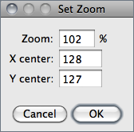
Zooms the active image to an exact value (e.g.37.4%) overcoming the predefined zoom steps described in . The zoomed canvas will be centered at X,Y center (pixel coordinates) [28].
28.14
As mentioned previously, this submenu contains commands for creating and working with non-destructive image Overlays↑. An overlay consists of one or more selections: arrows, lines, points, shapes and text (see ImageJ Toolbar↑). Overlays can also be composed of image selections (imageROIs) that behave partially as regular Selections↑ (see ).
Press B () to add the current selection to the overlay. Press Shift F () to create an RGB image with the overlay embedded in it. The overlay is preserved when an image is saved in TIFF format (cf. 3: Image Types: Lossy Compression and Metadata↑).
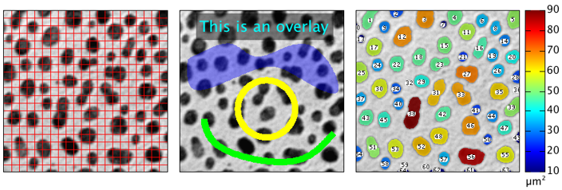
Figure 25 Non-destructive image Overlays↑. Outputs from Grid_Overlay, MakeOverlay and ROI Color Coder that exemplify the usage of most submenu commands. The Overlay Brush↑ tool can also be used to create freehand annotations.
28.14.1
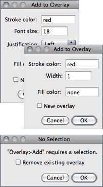
Selections are immediately added to the current overlay when pressing B. Pressing Alt B will display the dialog box depicted on the left in which Stroke color and width and Fill color can be set.
Except for text selections, and as explained in , Stroke (contour) color and Width are ignored if a Fill color is specified. Colors are specified using the name of one of the default selection colors (black, blue, cyan, green, magenta, orange, red, white and yellow) or using hex notation (see 20: Hexadecimal Color Values↓).
Previously added Overlays↑ are removed if New overlay is checked. Also, if no selection exists and the command is run, a warning message is displayed in which is possible to remove the existing overlay, by running .
Note that measured selections () can be added automatically to the image overlay by selecting the Add to overlay checkbox in
, , ,, 20: Hexadecimal Color Values↓,
28.14.2
Blends two open images by adding an image to the overlay of frontmost image. The image to be blended can be of any type (see Image Types and Formats↑) but cannot be larger than the host image. A blending alpha value can be specified in the Opacity (0--100%) field. The initial X,Y location is based on the existing rectangular selection, if any.
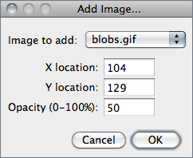
By default the created overlay image cannot be moved around the canvas, i.e,, is not a image selection (ImageROI), but are stored in the TIFF header and can be saved and restored when saving images in TIFF format. On the other hand, image selections can be created using or by running after adding the image to the overlay.
(Blend transfer mode),
20 Hexadecimal Color Values
Hexadecimal (hex) notation is frequently used in computing to summarize binary code in a human-friendly manner. Here are some decimal/hexadecimal equivalents:
| Dec | 0 | 1 | 2 | 3 | 4 | 5 | 6 | 7 | 8 | 9 | 10 | 11 | 12 | 13 | 14 | 15 | 16 | 17 | 18 | 19 | 20 | … | 30 | 40 | 50 | 60 | 70 | 80 | 90 | 100 | 110 | … | 255 |
| Hex | 0 | 1 | 2 | 3 | 4 | 5 | 6 | 7 | 8 | 9 | A | B | C | D | E | F | 10 | 11 | 12 | 13 | 14 | … | 1E | 28 | 32 | 3C | 46 | 50 | 5A | 64 | 6E | … | FF |
| Color | RGB triplet | Transparency value (optional) | Hex triplet | ||||||||||
| 0% | 10% | 20% | 30% | 40% | 50% | 60% | 70% | 80% | 90% | 100% | |||
| Blue | 0, 0, 255 | #00 | #19 | #33 | #4C | #66 | #7F | #99 | #B2 | #CC | #E5 | #FF | 00 00 FF |
| Cyan | 0, 255, 255 | #00 | #19 | #33 | #4C | #66 | #7F | #99 | #B2 | #CC | #E5 | #FF | 00 FF FF |
| Green | 0, 255, 0 | #00 | #19 | #33 | #4C | #66 | #7F | #99 | #B2 | #CC | #E5 | #FF | 00 FF 00 |
| Magenta | 255, 0, 255 | #00 | #19 | #33 | #4C | #66 | #7F | #99 | #B2 | #CC | #E5 | #FF | FF 00 FF |
| Red | 255, 0, 0 | #00 | #19 | #33 | #4C | #66 | #7F | #99 | #B2 | #CC | #E5 | #FF | FF 00 FF |
| Orange | 255, 150, 0 | #00 | #19 | #33 | #4C | #66 | #7F | #99 | #B2 | #CC | #E5 | #FF | FF 00 FF |
| Yellow | 255, 255, 0 | #00 | #19 | #33 | #4C | #66 | #7F | #99 | #B2 | #CC | #E5 | #FF | FF 00 FF |
| White | 255, 255, 255 | #00 | #19 | #33 | #4C | #66 | #7F | #99 | #B2 | #CC | #E5 | #FF | FF 00 FF |
| Gray | 127, 127, 127 | #00 | #19 | #33 | #4C | #66 | #7F | #99 | #B2 | #CC | #E5 | #FF | FF 00 FF |
| Black | 0, 0, 0 | #00 | #19 | #33 | #4C | #66 | #7F | #99 | #B2 | #CC | #E5 | #FF | 00 00 00 |
Alpha blending values can be added to the beginning of hex triplets to modulate color transparency: e.g., #7F FF 00 00 defines red at 50% opacity.
In ImageJ the hash (#) prefix is optional.
In ImageJ the hash (#) prefix is optional.
28.14.3
Causes ImageJ to stop displaying the overlay displayed by .
28.14.4
Displays an overlay that was hidden by .
28.14.5
Creates an overlay from the selections on the ROI Manager↓ list (see ). Note that previously added Overlays↑ will be removed.
28.14.6
Copies the selections and images in the current overlay to the ROI Manager, where they can be edited (moved, resized or re-colored) (see ). Note that previous items in the ROI Manager list will be deleted.
28.14.7
Permanently clears the overlay so that it cannot be restored using .
28.14.8
Creates a new RGB image that has the overlay rendered as pixel data. The RGB image is the same size as the active image, unlike , which creates a WYSIWYG[?] (What You See Is What You Get) image that is the same size as its window. Stacks↑ must first be converted to RGB ( submenu, see also Image Types and Formats↑) when flattening all slices in the stack.
28.14.9
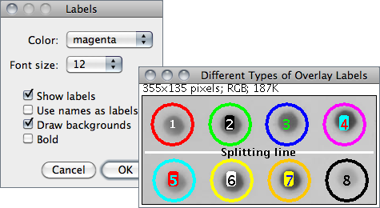
This prompt defines if and how Overlays↑ should be labelled.
It sets the behavior of , (after activating the Add to overlay option in ), and the ROI Manager↓ Show All↓ display.
Color The color of the label as one of the default selection colors.
Font size Specifies the font size of the label (12--72 [?]pt).
Show labels If overlays should be decorated with a text label. This option is inactive by default.
Use names as labels If checked, ROI names are used instead of the default numeric labels. If unchecked, the size (selection count) of the current overlay is used. Selections can be renamed using the command, or, when using the ROI Manager, either Rename↓ or Properties↓
Draw backgrounds If checked, text will be displayed on complementary colored background. This option produces similar labels to those produced by the ROI Manager Show All↓ option when Labels is activated.
Bold If checked, labels (typeset in sans-serif font) are displayed in boldface.
28.14.10
Use this command to define the default overlay Stroke color, Stroke width and Fill color. As mentioned in and , Stroke (contour) color and Width are ignored if a Fill color is specified. Set Stroke width to 0 to have selections drawn using a width of one pixel regardless of the image magnification (see 19: Working with Zoomed Canvases↑).
As usual, colors are specified using the name of one of the ImageJ default colors (black, blue, cyan, green, magenta, orange, red, white and yellow) or using Hexadecimal Color Values↑.
With Stacks↑ and Hyperstacks↑, selecting the Set stack positions checkbox will make Overlays↑ visible only when browsing their respective slice or frame. If unchecked, overlays will be displayed throughout the stack (see also , More≫Options↓).
28.15
This submenu contains a selection of color lookup tables that can be applied to grayscale images to produce Pseudocolor Images↑. In addition, it lists all the lookup tables installed in the ImageJ/luts/ directory. More than 100 additional lookup tables are available from the ImageJ website as individual files or, in bulk, as a ZIP archive.
As explained earlier, it is not possible to organize LUTs into subfolders. However, the most frequently used lookup tables can be renamed with a numeric prefix (e.g, 01-glasbey.lut, 02-Termal.lut, etc.) so that they are listed earlier in the menu. This submenu can also be accessed from the Toolbar↑ by loading the LUT Menu↑.
When loading a lookup table is loaded and no image is open, a 256 × 32 ramp image is created to display the color table.
widget↑, Show_All_LUTs, a macro that creates a graphical palette of all the installed lookup tables.
{kind=link}
28.15.1
Inverts the current lookup table. For 8-bit images, the value (v) of each entry in the table is replaced by 255 − v. With inverted LUTs, pixels with a value of zero are white and pixels with a value 255 are black. Unlike the command, pixels values are not altered, only the way the image is displayed on the screen.
/
28.15.2
Applies the current lookup table function to each pixel in the image or selection and restores the default identity function. This modifies the gray values so that when the image is viewed using the default grayscale lookup table it will look the same as it did before. This command is equivalent to clicking on Apply in . For thresholded images, it is equivalent to clicking on Apply in .
/